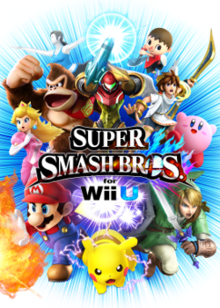
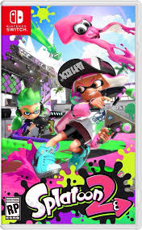
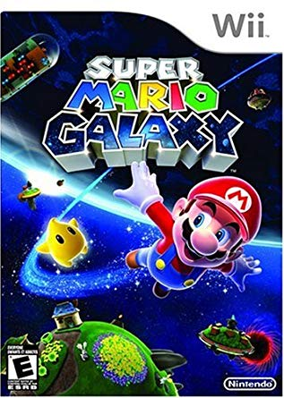
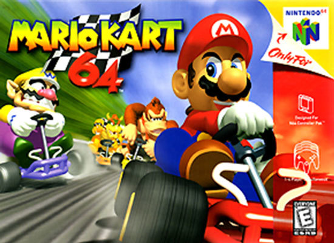
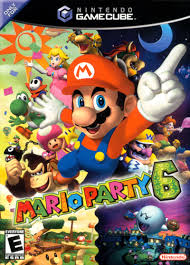

| Game Title |
Front Cover |
About It |
Type of Game |
| Super Smash Bros for Wii U |
 |
- It is my favorite game in the Super Smash Bros series. Its mechanics
and huge range of gaming options make it the most solid and best entry
so far.
- Before it was released, I really enjoyed keeping up with the latest
updates and news, spending most of my days anxious to see what was going
to be revealed next.
- There is a club at SLUH based around it that I attend every Friday,
and I've created a solid group of friends from that club.
- It's really easy to pick up, but difficult to master.
|
Platform Fighter |
| Minecraft |
 |
- This game has a enormous amount of things to do in it. It is one
of the games I have emmeresed myself into the most out of all the Games
I've played.
- Though it's main gamemode is singleplayer, I spend more of my time
on the multiplayer mode.
- This game has effected my personality the most, having gained and
lost a variety of friends through it, picking up new habits along
the way.
- Most of my creativity has been unlocked through Minecraft, helping
me become a better creator and entrepenuer.
|
Open-World Sandbox Game |
| Splatoon 2 |
 |
- Splatoon 2 was the first game on the Nintendo Switch, other than
Mario Kart 8 Deluxe, that I was able to get really passionate about.
- It has a vareity of gamemodes, each of them being really addictive
in their own way.
- It's heavy focus on multiplayer has always been my favorite aspect,
as I enjoy getting to go against or work with other players, helping
me understand where I am in terms of skill.
- I prefer this game over the first game because of it's more expansive
game variety, including better singleplayer and more immersive matches.
|
Third-Person Shooter |
| Super Mario Galaxy |
 |
- My favorite mainline Mario game, followed closly my Super Mario
Sunshine. It is one of the first games I was able to complete 100%.
- It includes very fun and memorable levels, and the gameplay
mechanics, even the motion control ones, don't get annoying.
- It includes a very intriging story, based around one of the characters
in the game. It's a really tragic and beautiful tale.
- I felt the original was better than the sequal due to it having
more interesting gameplay than the sequel offered.
|
Platformer |
| Mario Kart 64 |
 |
- My very first video game ever. Though the console was in my sister's
room, I would often go there to play for hours on it.
- It's really easy to pick up, with a simple character roster, simple
tracks to race on, and simple modes to play.
- The singleplayer races have an added level of diffuctly due to the
AI of the computer players having a speed boost given to them if you
get too far ahead.
- It was the entry point of my gaming life, giving me a long term
interest in video games in general.
|
Racing Game |
| Mario Party 6 |
 |
- This game was one of the only games I could play with my family,
without me being so far ahead of them that it got boring.
- It has very memorable stages, characters, and minigames. In fact,
the minigames were so memeorable that I can't help but constantly compare
all Mario Party games with the ones offered in 6.
- My sister and I would often play this together, sparking my first
ever real rival in a game. I would train just to be able to beat her.
- The meachanics this entry provided were, in my opinion, the most
solid of any Mario Party game.
|
Party Game |